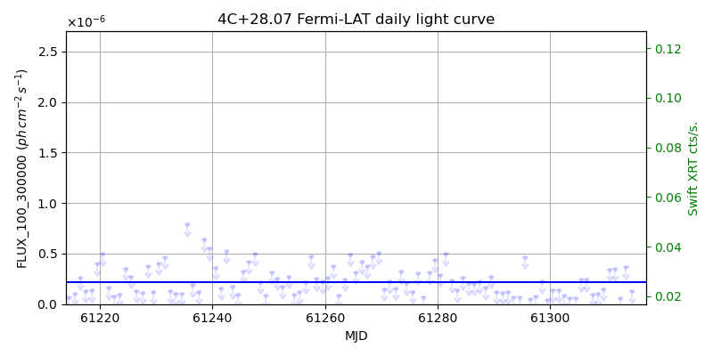
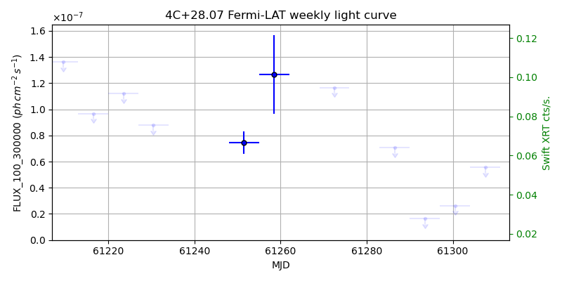
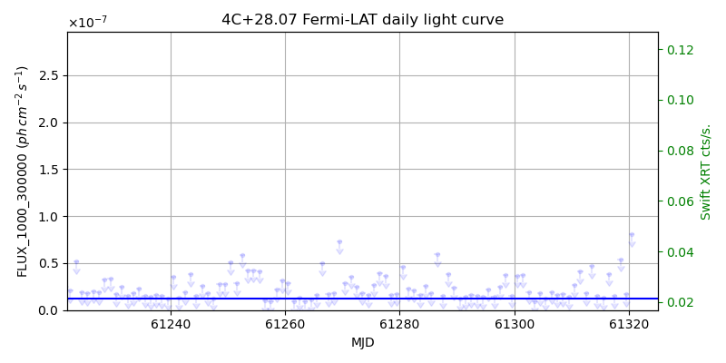
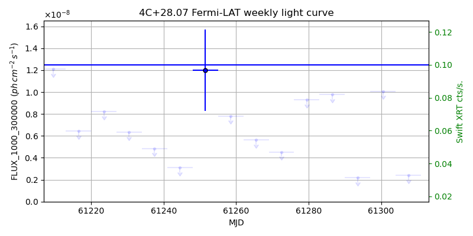

LAT Lightcurve site: https://fermi.gsfc.nasa.gov/ssc/data/access/lat/msl_lc/source/4C_p28d07
Swift site: https://www.swift.psu.edu/monitoring/source.php?source=4C+28.07
NED: Query
Time of last update of this page: UT: 2026-10-02 15:12 (MJD: 61315.634)
| Property | Value |
|---|---|
| R.A. | 2:37:52.32 |
| Dec. | 28:48:07.2 |
| z | 1.213 |
| 3FGL SpectrumType | LogParabola |
| 3FGL PL Index | |
| 3FGL Flux_100_300000 | 2.18e-07 1 / (s cm2) |
| 3FGL Flux_1000_300000 | 1.25e-08 1 / (s cm2) |
| 3FGL Flux >200 GeV | 2.06e-12 1 / (s cm2) |
| 3FGL Extrap. Crab >200 GeV | 0.01 |
| 3FGL Flux After EBL Absorption >200GeV | 1.61e-14 1 / (s cm2) |
| 3FGL EBL Crab Fraction >200GeV | 0.00 |

| MJD | dMJD | Flux | dFlux | Frac3FGL | FracCrab>200GeV | EBLFracCrab>200GeV |
|---|---|---|---|---|---|---|
| 61310.50 | 0.50 | 3.44e-07 | 0.00e+00 | 0.00 | 0.00 | 0.00 |
| 61311.50 | 0.50 | 3.49e-07 | 0.00e+00 | 0.00 | 0.00 | 0.00 |
| 61312.50 | 0.50 | 6.36e-08 | 0.00e+00 | 0.00 | 0.00 | 0.00 |
| 61313.50 | 0.50 | 3.66e-07 | 0.00e+00 | 0.00 | 0.00 | 0.00 |
| 61314.50 | 0.50 | 1.29e-07 | 0.00e+00 | 0.00 | 0.00 | 0.00 |

| MJD | dMJD | Flux | dFlux | Frac3FGL | FracCrab>200GeV | EBLFracCrab>200GeV |
|---|---|---|---|---|---|---|
| 61279.50 | 3.50 | 1.74e-07 | 0.00e+00 | 0.00 | 0.00 | 0.00 |
| 61286.50 | 3.50 | 7.06e-08 | 0.00e+00 | 0.00 | 0.00 | 0.00 |
| 61293.50 | 3.50 | 1.63e-08 | 0.00e+00 | 0.00 | 0.00 | 0.00 |
| 61300.50 | 3.50 | 2.63e-08 | 0.00e+00 | 0.00 | 0.00 | 0.00 |
| 61307.50 | 3.50 | 5.55e-08 | 0.00e+00 | 0.00 | 0.00 | 0.00 |

| MJD | dMJD | Flux | dFlux | Frac3FGL | FracCrab>200GeV | EBLFracCrab>200GeV |
|---|---|---|---|---|---|---|
| 61310.50 | 0.50 | 2.67e-08 | 0.00e+00 | 0.00 | 0.00 | 0.00 |
| 61311.50 | 0.50 | 4.13e-08 | 0.00e+00 | 0.00 | 0.00 | 0.00 |
| 61312.50 | 0.50 | 1.80e-08 | 0.00e+00 | 0.00 | 0.00 | 0.00 |
| 61313.50 | 0.50 | 4.69e-08 | 0.00e+00 | 0.00 | 0.00 | 0.00 |
| 61314.50 | 0.50 | 1.52e-08 | 0.00e+00 | 0.00 | 0.00 | 0.00 |

| MJD | dMJD | Flux | dFlux | Frac3FGL | FracCrab>200GeV | EBLFracCrab>200GeV |
|---|---|---|---|---|---|---|
| 61279.50 | 3.50 | 9.30e-09 | 0.00e+00 | 0.00 | 0.00 | 0.00 |
| 61286.50 | 3.50 | 9.77e-09 | 0.00e+00 | 0.00 | 0.00 | 0.00 |
| 61293.50 | 3.50 | 2.20e-09 | 0.00e+00 | 0.00 | 0.00 | 0.00 |
| 61300.50 | 3.50 | 1.01e-08 | 0.00e+00 | 0.00 | 0.00 | 0.00 |
| 61307.50 | 3.50 | 2.40e-09 | 0.00e+00 | 0.00 | 0.00 | 0.00 |
--------------------------------------------------------- Using user-supplied coords: 2:37:52.32 28:48:07.2 2000 --------------------------------------------------------- FLWO UT night of: 2026-10-03 Local Sid. @ Midnight: 00:24 Sunset (-15.0) (local, UT): 19:14 02:14 Sunrise (-15.0) (local, UT): 05:12 12:12 Moonrise (local, UT): 22:48 05:48 Moonset (local, UT): Moon phase: 0.53 --------------------------------------------------------- AzTime LSID UT Obj_el Obj_az Mn_el Mn_az Sep. --------------------------------------------------------- 19:14 19:37 02:14 3.3 57.6 -28.5 20.1 47.9 19:44 20:07 02:44 8.7 61.2 -26.2 26.7 48.3 20:14 20:37 03:14 14.4 64.6 -23.2 32.8 48.7 20:44 21:07 03:44 20.2 67.7 -19.6 38.5 49.1 21:14 21:37 04:14 26.2 70.7 -15.7 43.6 49.4 21:44 22:07 04:44 32.3 73.6 -11.3 48.4 49.8 22:14 22:37 05:14 38.4 76.4 -6.5 52.7 50.1 22:44 23:07 05:44 44.7 79.1 -0.8 56.7 50.4 23:14 23:37 06:14 51.0 81.9 3.8 60.4 50.7 23:44 00:07 06:44 57.4 84.8 9.1 63.9 51.0 00:14 00:38 07:14 63.7 88.1 14.6 67.1 51.3 00:44 01:08 07:44 70.1 92.0 20.3 70.2 51.6 01:14 01:38 08:14 76.5 97.8 26.1 73.1 51.8 01:44 02:08 08:44 82.7 110.3 32.1 76.0 52.1 02:14 02:38 09:14 87.2 175.1 38.1 78.8 52.3 02:44 03:08 09:44 83.2 248.1 44.2 81.7 52.5 03:14 03:38 10:14 77.0 261.6 50.3 84.8 52.7 03:44 04:08 10:44 70.6 267.6 56.5 88.1 52.9 04:14 04:38 11:14 64.2 271.7 62.7 91.9 53.1 04:44 05:08 11:44 57.8 275.0 68.9 96.9 53.3 05:12 05:37 12:12 51.8 277.8 74.7 103.8 53.5 --------------------------------------------------------- Dark hours >55 deg.: 0.00